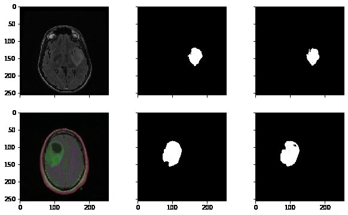
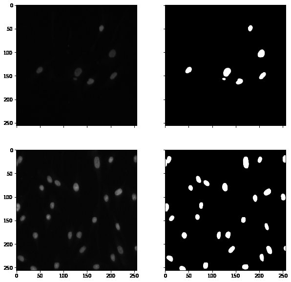

<div id="portfolio-page" class="portfolio-page-content">
    <div class="container">
        <div class="portfolio-nav">
            <div id="portfolio-close-button" class="portfolio-close-button">
                <a href="#portfolio"><i class="fa fa-close"></i></a>
            </div>
        </div>

        <div class="portfolio-title">
            <h1>Research Overview</h1>
        </div>

        <div class="row">
            <div class="col-sm-7 col-md-7 portfolio-block">
                <div class="owl-carousel portfolio-page-carousel">
                    <div class="item">
                        
                    </div>
                    <div class="item">
                        
                    </div>
                    <div class="item">
                        
                    </div>
                </div>

                <!-- <div class="portfolio-page-video embed-responsive embed-responsive-16by9">
                  <iframe class="embed-responsive-item" src="https://player.vimeo.com/video/97102654?autoplay=0"></iframe>
                </div> -->

                <!--
                <div class="portfolio-page-image">
                    
                </div>
                -->

                <script type="text/javascript">
                    jQuery(document).ready(function ($) {
                        $('.portfolio-page-carousel').owlCarousel({
                            smartSpeed: 1200,
                            items: 1,
                            loop: true,
                            dots: true,
                            nav: true,
                            navText: false,
                            margin: 10
                        });
                    });
                </script>
            </div>

            <div class="col-sm-5 col-md-5 portfolio-block">
                <!-- Project Description -->
                <div class="block-title">
                    <h3>Semantic Segmentation of
                        Self-Supervised Dataset and Medical Images Using Combination of U-Net and
                        Neural Ordinary Differential Equations.</h3>
                </div>
                <ul class="project-general-info">
                    <li>
                        <p><i class="fa fa-user"></i> <b>Md. Atik Ahamed</b>, Dr. Md. Ali Hossain, Dr. Md. Al Mamun</p>
                    </li>
                    <li>
                        <p><i class="fa fa-globe"></i> <a href="http://dx.doi.org/10.1109/TENSYMP50017.2020.9230884"
                                target="_blank">DOI: 10.1109/TENSYMP50017.2020.9230884</a></p>
                    </li>
                    <li><p><a href="https://www.researchgate.net/publication/345804338_Semantic_Segmentation_of_Self-Supervised_Dataset_and_Medical_Images_Using_Combination_of_U-Net_and_Neural_Ordinary_Differential_Equations"
                        target="_blank"> ResearchGate</a> </p></li>
                    <li>
                        <p><i class="fa fa-calendar"></i>June, 2020</p>
                    </li>

                   

                </ul>

                <p class="text-justify">
                    <b>Abstract</b>
                    <br>
                    An architecture is proposed in this paper, which combines both the U-net and Neural Ordinary
                    Differential Equations for semantic segmentation. This method consumes very lower memory and at the
                    same time in many cases outperforms some state-of-the-art methodologies in terms of very well known
                    performance metrics for semantic segmentation. The proposed approach is tested on three datasets,
                    two of them are medical images and another one is self-supervised dataset. For all the datasets, the
                    proposed approach outperforms the state-of-the-art methods with the same environmental setup.
                </p>
                <!-- /Project Description -->

                <!-- Technology -->
                <div class="tags-block">
                    <div class="block-title">
                        <h3>Index Terms</h3>
                    </div>

                    <ul class="tags">
                        <li><a>U-Net</a></li>
                        <li><a>Neural Ordinary Differential Equations</a></li>
                        <li><a>Deep Learning</a></li>
                        <li><a>Semantic Segmentation</a></li>
                        <li><a>Fully ConvolutionalNeural Network</a></li>
                    </ul>
                </div>
                <!-- /Technology -->

                <!-- Share Buttons -->

                <!-- /Share Buttons -->
            </div>
        </div>
    </div>
</div>